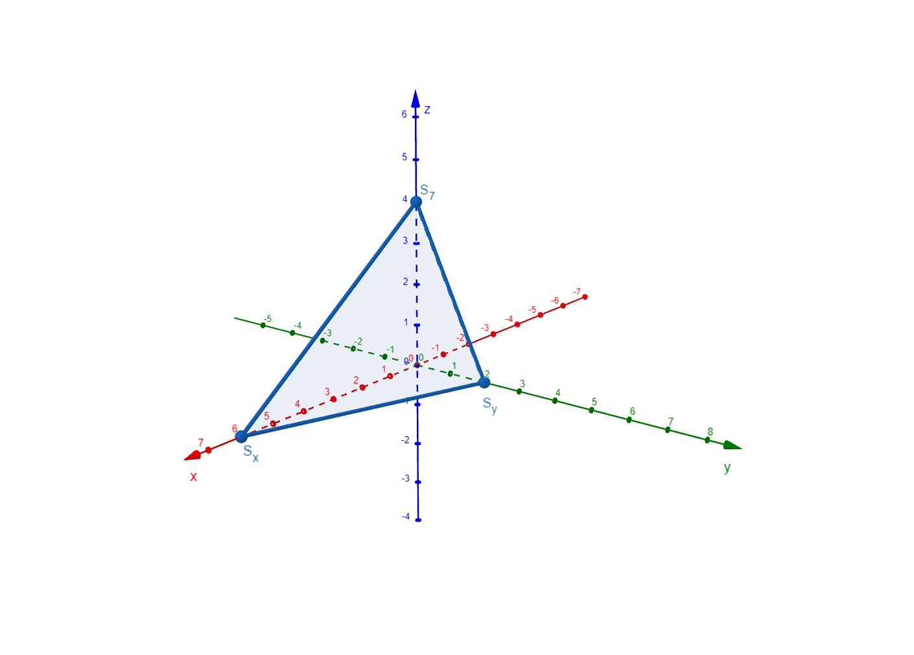
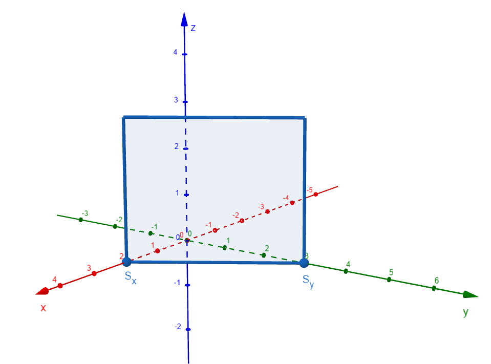
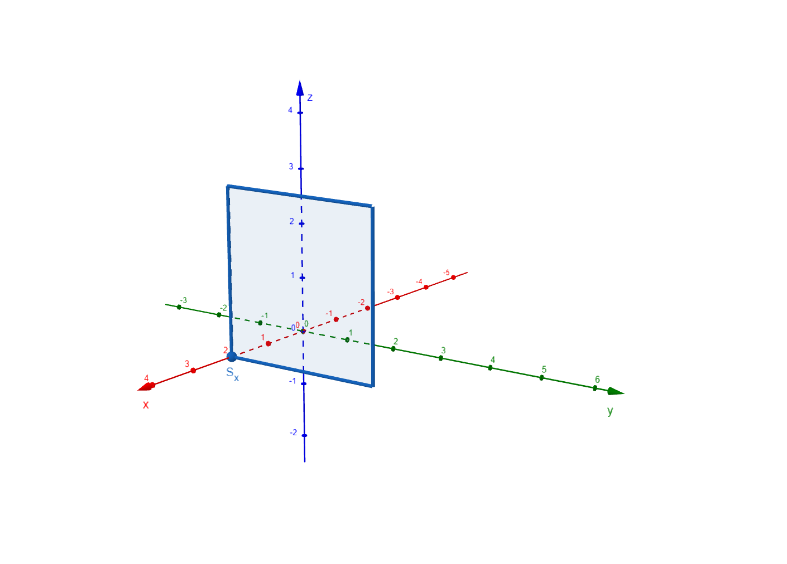

Spurpunkte und Spurgeraden
Begriffsdefinition¶
Die Spurpunkte einer Ebene sind die Schnittpunkte der Ebene mit den Koordinatenachsen.
Die Spurgeraden einer Ebene sind die Schnittgeraden der Ebene mit den Koordinatenebenen
(\(xy\)-Ebene, \(xz\)-Ebene, \(yz\)-Ebene).
Zur geometrischen Veranschaulichung einer Ebene im räumlichen Koordinatensystem werden häufig ihre Spurpunkte bzw. Spurgeraden verwendet.
Spurpunkte einer Ebene¶
Gegeben sei eine Ebene in Koordinatenform:
Die Spurpunkte ergeben sich durch das systematische Nullsetzen von jeweils zwei Koordinaten:
- Spurpunkt auf der \(x\)-Achse
\(y=0,\ z=0\)
- Spurpunkt auf der \(y\)-Achse
\(x=0,\ z=0\)
- Spurpunkt auf der \(z\)-Achse
\(x=0,\ y=0\)
Existiert für eine Koordinate keine Lösung, so ist die Ebene parallel zur entsprechenden Achse und besitzt dort keinen Spurpunkt.
Spurgeraden einer Ebene¶
Spurgeraden entstehen als Schnitte der Ebene mit den Koordinatenebenen:
- Spurgerade \(s_{12}\): Schnitt mit der \(xy\)-Ebene (\(z=0\))
- Spurgerade \(s_{13}\): Schnitt mit der \(xz\)-Ebene (\(y=0\))
- Spurgerade \(s_{23}\): Schnitt mit der \(yz\)-Ebene (\(x=0\))
Je nach Lage der Ebene existieren zwei oder drei Spurgeraden. Ist die Ebene parallel zu einer Koordinatenebene, entfällt die entsprechende Spurgerade.
Achsenabschnittsform einer Ebene¶
Besitzt eine Ebene drei Spurpunkte
so lautet die Achsenabschnittsform der Ebene:
Die Nenner \(u,v,w\) entsprechen genau den Koordinaten der Spurpunkte auf den jeweiligen Achsen.
Umwandlung von der Koordinatenform in die Achsenabschnittsform¶
Gegeben sei die Koordinatenform:
Durch Division der gesamten Gleichung durch \(d\) erhält man:
Diese Gleichung kann umgeschrieben werden zu:
Damit ergibt sich unmittelbar die Achsenabschnittsform, wobei
die Koordinaten der Spurpunkte sind.
Beispiel: Ebene mit drei Spurpunkten¶
Gegeben sei die Ebene:
Division durch \(12\) liefert:
Die Spurpunkte sind somit:
Diese drei Punkte bilden ein Dreieck, dessen Seiten Ausschnitte der Spurgeraden darstellen.

Beispiel: Ebene mit zwei Spurpunkten¶
Eine Ebene besitzt genau zwei Spurpunkte, wenn sie parallel zu einer Koordinatenachseverläuft. In diesem Fall fehlt eine Variable in der Koordinatengleichung.
Gegeben sei die Ebene:
Der Term mit \(z\) fehlt, daher ist die Ebene parallel zur \(z\)-Achse.
Spurpunkte¶
- Spurpunkt auf der \(x\)-Achse
\(y=0,\ z=0\)
- Spurpunkt auf der \(y\)-Achse
\(x=0,\ z=0\)
- Kein Spurpunkt auf der \(z\)-Achse, da
Spurgeraden (in Parameterform)¶
Spurgeraden entstehen als Schnitte der Ebene mit den Koordinatenebenen.
Spurgerade mit der \(xy\)-Ebene (\(z=0\))¶
Ein Punkt der Geraden ist z. B. \(S_1(2|0|0)\). Ein Richtungsvektor ergibt sich aus der Ebenengleichung, z. B. \(\begin{pmatrix}2\\-3\\0\end{pmatrix}\).
Spurgerade mit der \(xz\)-Ebene (\(y=0\))¶
Ein Punkt ist \(S_1(2|0|0)\). Da die Ebene parallel zur \(z\)-Achse ist, kann der Richtungsvektor \(\begin{pmatrix}0\\0\\1\end{pmatrix}\) gewählt werden.
Spurgerade mit der \(yz\)-Ebene (\(x=0\))¶
Ein Punkt ist \(S_2(0|3|0)\). Auch hier ist die Gerade parallel zur \(z\)-Achse.
Ergebnis:
Die Ebene besitzt zwei Spurpunkte und drei Spurgeraden, die jeweils in Parameterform angegeben werden können.

Beispiel: Ebene mit einem Spurpunkt¶
Eine Ebene besitzt genau einen Spurpunkt, wenn sie parallel zu zwei Koordinatenachsen und damit parallel zu einer Koordinatenebene verläuft.
Gegeben sei die Ebene:
Die Ebene ist parallel zur \(yz\)-Ebene sowie zur \(y\)- und \(z\)-Achse.
Spurpunkte¶
- Spurpunkt auf der \(x\)-Achse
\(y=0,\ z=0\)
- Kein Spurpunkt auf der \(y\)-Achse, da
- Kein Spurpunkt auf der \(z\)-Achse, da
Spurgeraden (in Parameterform)¶
Spurgerade mit der \(xy\)-Ebene (\(z=0\))¶
Ein Punkt ist \(S(2|0|0)\). Ein Richtungsvektor ist \(\begin{pmatrix}0\\1\\0\end{pmatrix}\).
Spurgerade mit der \(xz\)-Ebene (\(y=0\))¶
Ein Punkt ist ebenfalls \(S(2|0|0)\). Ein möglicher Richtungsvektor ist \(\begin{pmatrix}0\\0\\1\end{pmatrix}\).
Kein Schnitt mit der \(yz\)-Ebene (\(x=0\))¶
Da \(x=2\) gilt, existiert keine Spurgerade mit der \(yz\)-Ebene.
Ergebnis:
Die Ebene besitzt einen Spurpunkt und zwei Spurgeraden, die zueinander parallel sind.

Überblick¶
| Ebene | Spurpunkte | Spurgeraden |
|---|---|---|
| Allgemeine Lage | 3 | 3 |
| Parallel zu einer Achse | 2 | 3 |
| Parallel zu einer Koordinatenebene | 1 | 2 |